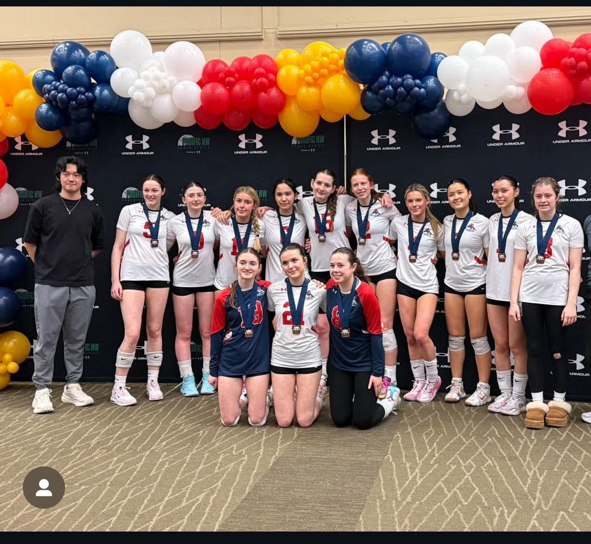
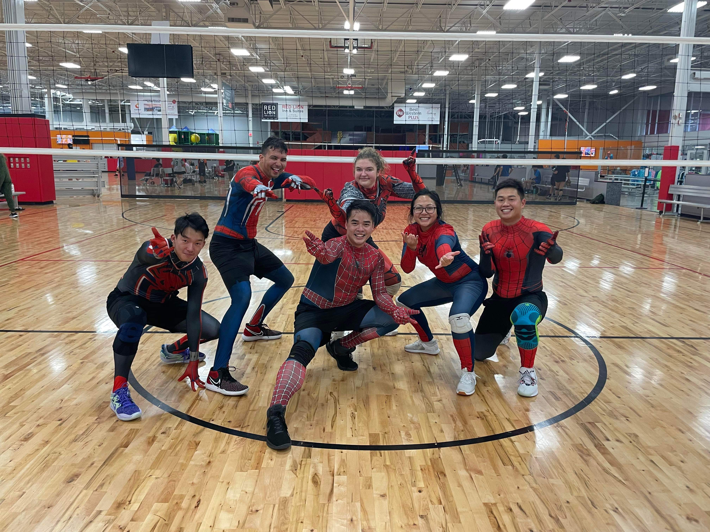

Playing Volleyball
Volleyball has been a huge part of my life. I love the energy, teamwork, and strategy involved. Whether it’s digging out a tough serve or delivering a powerful spike, being on the court keeps me focused and motivated.
Volleyball has been a huge part of my life. I love the energy, teamwork, and strategy involved. Whether it’s digging out a tough serve or delivering a powerful spike, being on the court keeps me focused and motivated.
Coaching has given me a deeper understanding of the game. I enjoy teaching players the fundamentals, building team chemistry, and helping them grow. It’s rewarding to watch athletes build confidence and improve their skills.
We won first place in the Bronze Bracket at the MLK Tournament!
Volleyball is more than a sport — it’s a lifelong passion. It’s helped shape who I am as a leader and teammate. Both playing and coaching have taught me resilience, discipline, and the importance of trust.
Our Halloween tournament — we all dressed up as Spider-Man.
Outside of volleyball, I’m a huge fan of Gundam. Building Gundam is one of my favorite things to do to relax — it's a creative and calming way to unwind after a long day.


Went to the Gundam exhibition in Tokyo, Japan!